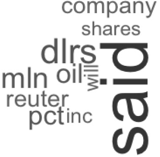

4.1 Minería de texto
4.1.1 Introducción
Actualmente se generan diariamente grandes cantidades de información en formato textual: entradas de blogs, nuevas páginas web, mensajes en redes sociales, documentos en intranets corporativas, entradas en canales de distribución de información (feeds, listas de correo), etc.
Para poder procesar esta información textual de una manera escalable se hace necesario el desarrollo de técnicas y herramientas que permitan automatizar la tarea mediante el uso de computadoras. El objetivo es reducir en la medida de lo posible la intervención humana (que suele ser costosa tanto económicamente como en tiempo de procesado) aunque sin eliminarla (dado que a fin de cuentas el análisis de la información textual responderá a las necesidades particulares de un usuario o grupo de usuarios).
La minería de texto es un proceso en el que un usuario interactúa con una colección de documentos utilizando una serie de herramientas con la intención de obtener información útil para las necesidades del usuario.
Para llevar a cabo tareas de minería de texto en R usaremos el paquete tm. Este paquete fue desarrollado en la University of Economics and Business de Viena (WU Vienna) por Ingo Feinerer como parte de su tesis doctoral: «A text mining framework in R and its applications», publicada en el año 2008.
Básicamente, el objetivo del paquete es proporcionar un entorno dentro del lenguaje R para permitir el desarrollo de aplicaciones de minería de texto, incluyendo funcionalidades tales como:
Procesamiento previo: importar datos y prepararlos (por ejemplo, eliminando espacios en blanco y signos de puntuación, troceando el texto en términos, etc.).
Asociaciones: encontrar términos asociados a otro en base a la frecuencia con la que los términos concurren (se mencionan a la vez en el mismo documento).
Agrupamiento: realizar agrupamiento (clustering) de documentos similares.
Clasificación: organizar documentos en base a una lista de categorías previamente definidas.
Resumen: resumir un texto en sus conceptos principales (que típicamente se definirán en base a los términos que se mencionen con mayor frecuencia).
El paquete tm es software libre y gratuito. Para instalarlo en nuestro entorno de R simplemente debemos ejecutar desde la consola la expresión:
install.packages("tm", dependencies=TRUE) Y a continuación, una vez instalado, cargar la librería en el entorno de R con:
library(tm) Una vez hemos presentado brevemente el paquete tm y lo hemos instalado en nuestro ordenador, en la siguiente sección pasaremos a ver las estructuras de datos y funciones que implementa y a trabajar con él en la práctica.
4.1.2 Minería de texto con tm
Normalmente toda de tarea de minería de texto se lleva a cabo mediante una serie de actividades o etapas:
La tarea de minería de texto suele comenzar importando una serie de textos dentro de la herramienta con la que vamos a llevar a cabo el análisis.
Una vez tenemos el texto importado en la herramienta, la siguiente etapa suele consistir en llevar a cabo una serie de tareas de procesamiento previo de ese texto, entre las que se pueden incluir actividades como: eliminación de espacios en blanco, eliminación de stopwords (palabras que no aportan significado al texto como artículos o conjunciones), etc.
A continuación, a partir del resultado de la etapa de procesamiento previo, se suele construir una estructura de datos que facilite el análisis y procesamiento posterior de los textos. La estructura más habitualmente utilizada es la denominada matriz de términos-documentos (term-document matrix), que veremos más adelante.
Finalmente, se lleva a cabo la tarea de análisis que nos interese utilizando la estructura de datos previamente construida.
A continuación veremos cómo llevar a cabo cada una de estas etapas utilizando las funcionalidades ofrecidas por el paquete tm.
4.1.2.1 Importar texto
La principal estructura de datos que ofrece tm para maneja conjuntos de documentos de texto es la que se conoce como corpus.
Existen distintos mecanismos que podemos utilizar a la hora de crear un corpus, dependiendo de la fuente de datos que queramos utilizar:
- El mecanismo más sencillo es utilizar un vector de cadenas de caracteres como fuente de datos (VectorSource), donde cada una de las entradas del vector se considerará un documento distinto:
docs<-c("Un documento", "Otro documento")
c<-Corpus(VectorSource(docs)) - Sin embargo, también es posible utilizar como fuente de datos un directorio en el que existen una serie de ficheros (DirSource). Por ejemplo, si quisiésemos construir un corpus a partir de una colección de documentos de texto (con extensión txt) con codificación UTF-8 ubicada en la carpeta /Users/user1/corpus podríamos ejecutar en la consola de R la expresión:
c<-Corpus(DirSource(directory = "/Users/user1/corpus",
encoding="UTF-8", pattern = "*.txt")) Una vez creado un corpus, se pueden utilizar una serie de operadores y funciones que el paquete tm ofrece para manipularlo. Entre las más relevantes figuran:
El operador [] se puede utilizar para acceder a un subconjunto de los documentos de un corpus.
El operador \[\[\]] permite acceder a un documento concreto del corpus.
La función c se puede utilizar para concatenar corpus.
La función length devuelve la longitud (número de documentos) del corpus.
La función content se puede utilizar para obtener el contenido de un documento del corpus.
corpus1<-Corpus(VectorSource(c("Un documento")))
corpus2<-Corpus(VectorSource(c("Otro documento")))
unidos<-c(corpus1, corpus2)
length(unidos)
# [1] 2
content(unidos[[2]])
# [1] "Otro documento" 4.1.2.2 Procesamiento previo
Para llevar a cabo la etapa de procesamiento previo utilizaremos la función tm_map que nos va a permitir llevar a cabo transformaciones en los datos de un corpus. Básicamente, la función tm_map recibe los siguientes parámetros:
El corpus sobre el que vamos a operar.
Una función que queremos que se ejecute sobre el corpus. Esta función recibirá como entrada y devolverá como salida un documento de los incluidos en el corpus.
Otros parámetros que pueda necesitar la función que queremos ejecutar.
Veremos a continuación algunas de las transformaciones que se suelen llevar a cabo en la etapa de procesamiento previo utilizando el siguiente corpus como ejemplo:
text<-c("En un lugar de la Mancha de cuyo nombre no quiero acordarme…",
"Miguel de Cervantes Saavedra (1547-1616)")
corpus<-Corpus(VectorSource(text)) 1. Normalizar el texto, convirtiendo todos los caracteres a minúsculas
corpus <- tm_map(corpus, content_transformer(tolower))
content(corpus[[2]])
# [1] "miguel de cervantes saavedra (1547-1616)"2. Eliminar signos de puntuación
corpus<-tm_map(corpus, removePunctuation)
content(corpus[[2]])
# [1] "miguel de cervantes saavedra 15471616"3. Eliminar menciones a números
corpus<-tm_map(corpus, removeNumbers)
content(corpus[[2]])
# [1] "miguel de cervantes saavedra " 4. Eliminar stopwords
corpus<-tm_map(corpus, removeWords, stopwords("spanish"))
corpus[[2]]
# [1] "miguel cervantes saavedra " Nótese que en este caso hemos utilizado un tercer argumento, para indicarle a la función removeWords la lista de palabras que debe eliminar (en este caso, las stopwords del español, aunque podríamos proporcionar también una lista propia).
5. Lematizar (stemming) los términos (encontrar su raíz)
corpus<-tm_map(corpus, stemDocument, "spanish")
content(corpus[[1]])
[1] {r eval=FALSE}" lug manch cuy nombr quier acord"La matriz de términos-documentos. Como su propio nombre indica, básicamente esta estructura consiste en una matriz cuyas filas representan diferentes términos y cuyas columnas representan documentos que mencionan esos términos.
El valor numérico de las celdas de la matriz se puede calcular de distintas formas. Por ejemplo, puede consistir simplemente en la frecuencia del término en el documento (cuenta del número de veces que el término aparece en el documento), en la frecuencia normalizada (esto es, el número de veces que el término aparece en el documento dividido entre el número total de términos del documento), etc
En tm podemos construir una matriz de términos-documentos directamente a partir de un corpus de documentos:
docs<-c("primer documento al principio", "segundo documento tras el
primer documento", "tercer documento tras el segundo documento",
"cuarto documento")
corpus<-Corpus(VectorSource(docs))
tdm<-TermDocumentMatrix(corpus) Podemos visualizar la matriz utilizando la función inspect:
inspect(tdm)
# <<TermDocumentMatrix (terms: 7, documents: 4)>>
# Non-/sparse entries: 13/15
# Sparsity : 54%
# Maximal term length: 9
# Weighting : term frequency (tf)
#
# Docs
# Terms 1 2 3 4
# cuarto 0 0 0 1
# documento 1 2 2 1
# primer 1 1 0 0
# principio 1 0 0 0
# segundo 0 1 1 0
# tercer 0 0 1 0
# tras 0 1 1 0 Donde se puede ver que los valores numéricos de las celdas en este ejemplo consisten simplemente en la cuenta de menciones (frecuencia, term frequency) de cada término (Terms) en cada documento (Docs).
Este comportamiento se puede cambiar a la hora de construir la matriz por medio del parámetro control y la propiedad weighting. Los valores más habitualmente empleados con esta propiedad son:
weightBin: el valor es un 0 o un 1 dependiendo de si el término está o no en el documento.
weitghTf: el valor de cada celda de la matriz es la frecuencia del término en el documento. Esta es la configuración por defecto, mostrada en el ejemplo anterior.
weightTfIdf: el valor de cada celda se calcula como el producto de la frecuencia de término normalizada por la frecuencia inversa de documento inverse document frequency (IDF). El IDF se calcula como el logaritmo del cociente que resulta de dividir el número total de documentos del corpus entre el número de documentos que mencionan al término.
Un ejemplo de uso de estos valores se muestra a continuación:
tdmTfIdf<-TermDocumentMatrix(corpus, control=list(weighting=weightTfIdf))
inspect(tdmTfIdf)
# <<TermDocumentMatrix (terms: 7, documents: 4)>>
# Non-/sparse entries: 9/19
# Sparsity : 68%
# Maximal term length: 9
# Weighting : term frequency - inverse document frequency
# (normalized) (tf-idf)
#
# Docs
# Terms 1 2 3 4
# cuarto 0.0000000 0.0 0.0 1
# documento 0.0000000 0.0 0.0 0
# primer 0.3333333 0.2 0.0 0
# principio 0.6666667 0.0 0.0 0
# segundo 0.0000000 0.2 0.2 0
# tercer 0.0000000 0.0 0.4 0
# tras 0.0000000 0.2 0.2 0 Se puede observar en las matrices mostradas en los ejemplos anteriores que, a pesar de no haber eliminado explícitamente las stopwords del corpus, algunas de las palabras que aparecen en los documentos (por ejemplo, el y la) no se incluyen en la matriz de términos-documentos. Esto se debe a que, por defecto, al construir la matriz se eliminan los términos de menos de tres caracteres.
- Tareas de análisis. En este apartado trabajaremos con un pequeño conjunto de documentos que contienen noticias en inglés de la agencia Reuters. Estos documentos se distribuyen ya con el paquete tm y se pueden cargar en el entorno de R haciendo:
data(acq)
data(crude)
corpus<-c(acq,crude)Una vez importados los documentos, podemos aplicar algunas de las técnicas de procesamiento previo vistas con anterioridad, para preparar los datos para su análisis:
corpus <- tm_map(corpus, content_transformer(tolower))
corpus <- tm_map(corpus, removeWords, stopwords("english"))
corpus <- tm_map(corpus, removePunctuation)
corpus <- tm_map(corpus, removeNumbers) A continuación veremos cómo llevar a cabo algunas operaciones típicas de minería de texto utilizando R, el paquete tm y este corpus.
4.1.3 Encontrar términos frecuentes
En muchas ocasiones nos interesará poder encontrar rápidamente aquellos términos que consideramos más relevantes en un corpus o en un documento, que usualmente son aquellos que aparecen mencionados con mayor frecuencia (siempre que se hayan eliminado previamente las stopwords).
Para ello podemos utilizar la función findFreqTerms. Por ejemplo, los términos que hayan aparecido al menos 25 veces en el corpus se obtendrían ejecutando:
tdm<-TermDocumentMatrix(corpus)
findFreqTerms(tdm, 25) También podemos obtener una lista con las k palabras más frecuentes a partir de la matriz de términos-documentos haciendo (por ejemplo, para k=10):
tf<-rowSums(as.matrix(tdm))
tfordered<-sort(tf, decreasing=TRUE)
top10<-tfordered[1:10] Donde primero calculamos la frecuencia agregada de cada término en todos los documentos del corpus (con rowSums), después ordenamos el resultado en orden descendente (con sort) y finalmente seleccionamos los primeros 10 elementos.
Podemos representar gráficamente el resultado mediante una nube de etiquetas, que se construyen en R por medio de la función wordcloud del paquete del mismo nombre:
install.packages("wordcloud", dependencies=TRUE)
library(wordcloud)
colors<-gray((top10+1)/(max(top10)+1))
wordcloud(names(top10), top10, colors=colors) El resultado obtenido se puede ver en la Figura 1.

Figura 1. Nube de etiquetas.
4.1.3.1 Buscar términos relacionados con otros
En ocasiones nos interesará también poder obtener una lista de palabras que guardan relación con una dada. Para ello, el paquete tm ofrece la función findAssocs, que encuentra términos que se mencionan frecuentemente en compañía del término buscado (y tienen, pues, una alta correlación). Esta función toma tres argumentos:
La matriz de términos-documentos con la que operar.
El término del que queremos encontrar relacionados.
Un valor numérico que sirve de umbral mínimo de correlación (los términos con correlación menor que esta, no se mostrarán).
Veamos un ejemplo de uso, en el que se pueden ver las palabras del corpus que tienen una correlación de al menos 0.65 con share.
findAssocs(tdm, "share", 0.65)
# $share
# offer cash merger later offers dlrs
# 0.74 0.70 0.68 0.66 0.66 0.65 4.1.4 Clasificación
Otra tarea de minería de texto que se suele realizar con cierta frecuencia es la de intentar clasificar los documentos de un corpus en una serie de categorías predefinidas.
Existen distintas técnicas que se pueden emplear para clasificar documentos. En nuestro caso utilizaremos una de las técnicas de clasificación más sencillas que se denomina KNN (K Nearest Neighbors). En concreto, la implementación de KNN que utilizaremos se proporciona en la librería class de R, que será necesario instalar y cargar en el entorno:
install.packages("class", dependencies=TRUE)
library(class) KNN es un algoritmo de clasificación supervisado, que necesita por tanto ser entrenado por medio de una serie de ejemplos para poder a continuación etiquetar apropiadamente nuevos documentos. Teniendo esto en cuenta, dividiremos nuestro corpus de ejemplo de Reuters en dos partes, una de entrenamiento y otra de evaluación, cada una de ellas conteniendo la mitad de los documentos de cada una de las dos categorías existentes:
train<-c(acq[1:25],crude[1:10])
trainClass<-c(rep("acq",25), rep("crude",10))
test<-c(acq[26:50],crude[11:20])
testClass<-c(rep("acq",25), rep("crude",10))
corpus<-c(train,test) Así pues, lo primeros 35 documentos del corpus serán los de entrenamiento (train) y los siguientes 35 los de evaluación (test). Nótese que hemos creado también vectores con la clase correcta en cada caso (trainClass, testClass) que utilizaremos con posterioridad.
A continuación, haremos el procesamiento previo del corpus y construiremos la matriz de términos-documentos de tm, de la manera habitual:
corpus <- tm_map(corpus, content_transformer(tolower))
corpus <- tm_map(corpus, removeWords, stopwords("english"))
corpus <- tm_map(corpus, removePunctuation)
corpus <- tm_map(corpus, removeNumbers)
corpus <- tm_map(corpus, stemDocument)
tdm<-TermDocumentMatrix(corpus) Transpondremos (con la función t) la matriz de términos-documentos para que la información relevante en este caso (los documentos) se represente en las filas, la convertiremos al tipo matriz de R (con as.matrix) y la normalizaremos, dividiendo cada una de las filas entre su norma euclídea:
dtm<-t(tdm)
m <- as.matrix(dtm)
norm_eucl <- function(m) m/apply(m, MARGIN=1, FUN=function(x)
sum(x^2)^.5)
m_norm <- norm_eucl(m) A continuación, extraeremos dos submatrices, para entrenamiento y evaluación:
trainm<-m_norm[1:35,]
testm<-m_norm[36:70,]Provistos con esta entrada, estamos en condiciones de utilizar el clasificador KNN al que pasaremos tres argumentos:
La matriz con los datos de entrenamiento.
La matriz con los datos de evaluación.
El vector que contiene las categorías correctas de los datos de entrenamiento.
output<-knn(trainm,testm,trainClass) El resultado almacenado en output contiene las clases estimadas por el clasificador KNN para el conjunto de evaluación. Podemos comparar este resultado con el valor esperado (vector testClass) para medir la calidad de nuestro clasificador. Para ello utilizaremos la función table para obtener la matriz de confusión del clasificador y, a partir de ella, calcularemos la tasa de aciertos del mismo:
tabla<-table("KNN"=output,"Correcta"=testClass)
tabla
# Correcta
# KNN acq crude
# acq 25 1
# crude 0 9
#
sum(diag(tabla))/sum(tabla)
# [1] 0.9714286 Donde, como podemos ver, nuestro clasificador ha acertado en aproximadamente el 97 % de los casos.